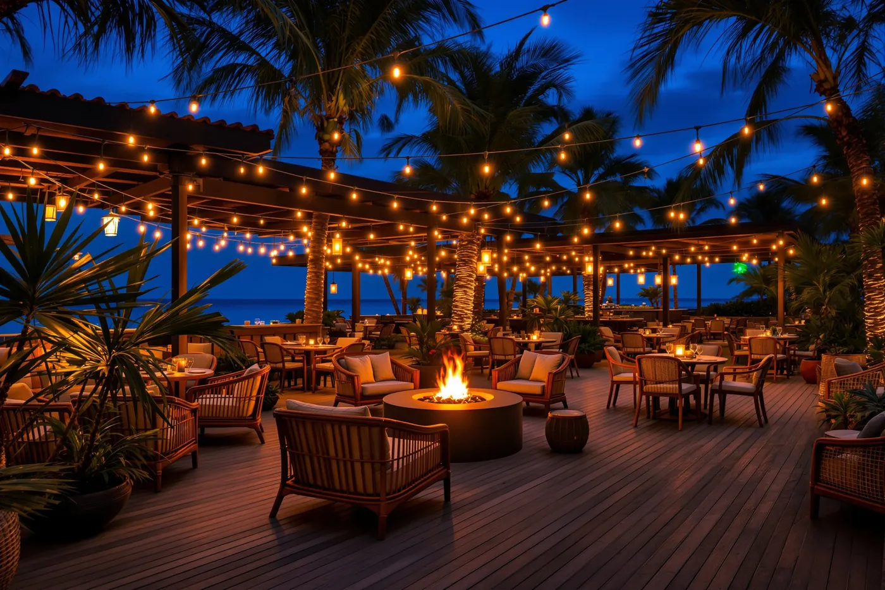

Zapopan · Jalisco
SAVE Av. Patria
- Dirección
- Av. Patria 574, Jardines de Guadalupe, 44030 Zapopan, Jal.
- Teléfono
- 33 3629 3124
- 33 1736 2644
- Horario
- Consulta el horario del día llamando a la sucursal o por WhatsApp.

Seis restaurantes en tres estados. La misma carta, el mismo producto del Mar de Cortés y, en todos, estacionamiento propio, valet parking gratuito y área de niños.
Zapopan · Jalisco
Guadalajara · Jalisco
Guadalajara · Jalisco
Santiago de Querétaro · Querétaro
San Pedro Garza García · Nuevo León
Monterrey · Nuevo León
Lo que encuentras en todas
Cajones exclusivos para comensales en todas las sucursales.
Servicio de valet privado sin costo adicional.
Zona de juegos vigilada para que la sobremesa dure lo que tenga que durar.
Transmisión de los partidos en pantallas dentro del restaurante.
Áreas separadas y ventiladas para cada preferencia.
Resolvemos dudas
La sucursal de Av. México 3388, en la colonia Monraz, es la más próxima al centro de Guadalajara. Las de Av. Guadalupe (Chapalita) y Av. Patria (Jardines de Guadalupe, Zapopan) quedan hacia el poniente de la ciudad.
Sí, en Nuevo León hay dos: una en Calle Valle Sol 101, colonia La Diana, San Pedro Garza García; y otra sobre Carretera Nacional km 973 n.º 4500, colonia Valle Alto, en Monterrey.
Sí. Las seis sucursales cuentan con estacionamiento propio y valet parking privado sin costo para los comensales.
Sí. Todas las sucursales tienen área de niños y un ambiente pensado para ir en familia, además de áreas separadas de fumadores y no fumadores.

Reserva en línea indicando la sucursal, la fecha y el número de personas.